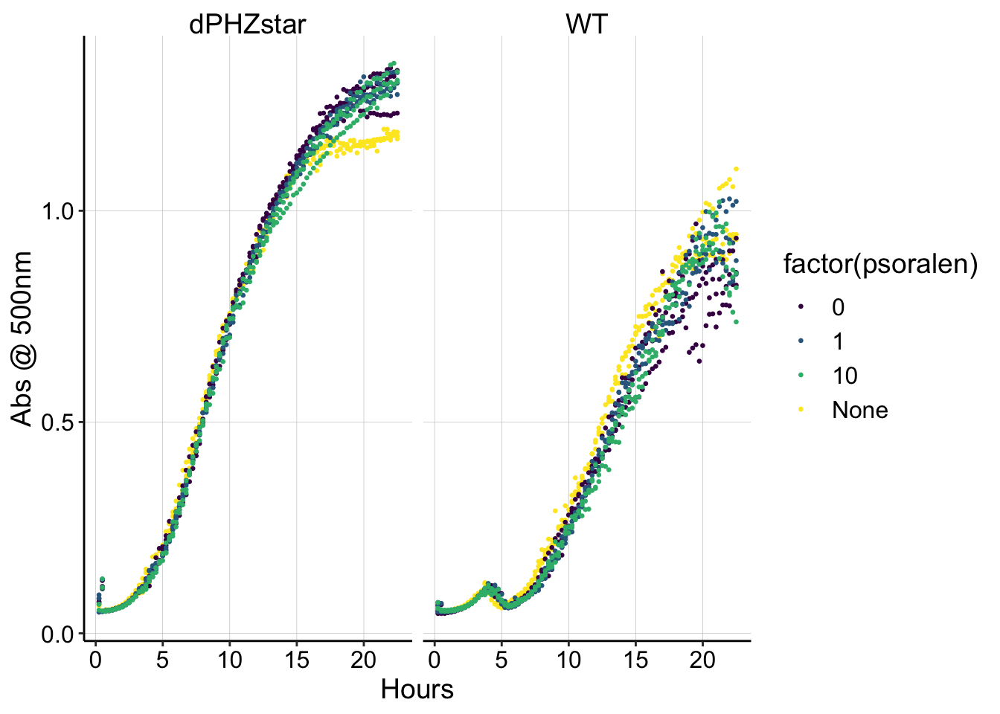

library(tidyverse)
library(cowplot)
library(broom)
library(modelr)
library(viridis)
library(lubridate)
library(hms)
knitr::opts_chunk$set(tidy.opts=list(width.cutoff=60),tidy=TRUE, echo = TRUE, message=FALSE, warning=FALSE, fig.align="center")
source("../../tools/echem_processing_tools.R")
source("../../tools/plotting_tools.R")
theme_set(theme_1())The purpose of this experiment was to test the toxicity of trioxsalen toward Pseudomonas aeruginosa cells under growth conditions. I have been using trioxsalen to treat IDA biofilms, and I wanted to get a sense for whether toxicity would be a huge problem for that set of experiments.
deltaPHZstar or WT PA cells were grown in minimal succinate medium with 1uM or 10uM trioxsalen (from a 50x EtOH stock), or with just EtOH, or with nothing added at all. This was to separate the effect of the 0.5% Ethanol on the cultures.
Each well contained the following:
The plate was incubated for ~24hrs @ 37 degrees with medium shaking, reading OD 500 and fluorescence excited at 365nm every 15min.
The well data is saved separately from the metadata for each well. Here I join them:
pr_data <- read_csv("../Data/plate_reader/01_21_19_psoralen_toxicity_growth_curve.csv") %>%
gather(key = well, value = abs, -time) %>% mutate(time = as.numeric(time)/60)
pr_metadata <- read_csv("../Data/plate_reader/01_21_19_psoralen_platereader_metadata.csv")
df_pr <- left_join(pr_data, pr_metadata, by = "well")And now we can plot the data:
ggplot(df_pr, aes(x = as.numeric(time)/60, y = abs, color = factor(psoralen))) +
geom_point(size = 0.5) + facet_wrap(~strain) + scale_color_viridis(discrete = T) +
xlab("Hours") + ylab("Abs @ 500nm") It looks like WT and dPHZstar grew a little differently in this experiment, but it does not seem like the trioxsalen affected the growth curves.
It does not appear that trioxsalen is overly toxic to PA cells, and 10uM is an appropriate concentration to use in the IDA experiments.